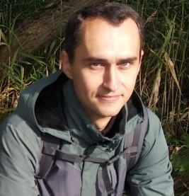

HTML, CSS & Git Basics
|  | First Name | Ihar (Игорь) |
| Middle Name | Iharavich (Игоревич) | |
| Last Name | Sakhonchyk (Сахончик) | |
| E-mail: | GeralldTit@gmail.com | |
| Skype: | Geralldtit | |
| Citizenship: | Republic of Belarus | |
| Date of Birth: | 08.06.1985 | |
| Marital status: | Divorced |
Education
| Name of Institution | Belarusian National Technical University |
| Dates | 1.09.2003 - 27.06.2008 |
| Study Mode | Full-time (Daily) |
| Faculty | INFORMATION TECHNOLOGIES AND ROBOTICS |
| Speciality | Information Systems and Technologies |
| Qualification | Programming Engineer |
| Grade/Degree/Certificate | Diploma of higher education |
Working experience
Oreol Engineering (December 2012 - December 2017)
Saint-Petersburg, Russia.
Software technical support
Qulix Systems (May 2011 - July 2012)
Minsk, Belarus.
Project: MP
Web-based application that supports the creation and modification of online stores.
Role and Responsibilities: Junior .NET Developer
Technologies and tools: ASP.NET MVC, SQL, JScript, HTML, CSS
Project: SEDD
Complex system for obtaining and processing documents and requests, generating reports.
Role and Responsibilities: Junior .NET Developer
Technologies and tools: T-SQL, XML, VBScripts
Project: EGRAD
The Unified State Register of highways. Highways location /condition accounting system.
Role and Responsibilities: Junior .NET Developer
Technologies and tools: T-SQL, WPF
Project: Task Manager
Applet for creation and recording tasks of various projects.
Role and Responsibilities: Junior .NET Developer
Technologies and tools: T-SQL, Web-services, ASP.NET MVC, WPF
JSC Mostovdrev (August 2008 - August 2010)
Mosty, Belarus.
Project: The system for registration, storage, recording of passes.
The system is a client-based application for creation, editing, deletion of passes for the enterprise.
And also the back-end for data storage in database.
Role and Responsibilities: Delphi Developer.
Technologies and tools: Servlets, JSP, EJB, JAAS, Struts
Project: Enterprise site update and maintenance.
Addition, editing, deletion of site and content divisions. Feedback processing and users interaction.
Role and Responsibilities: HTML Developer, Community manager
Technologies and tools: HTML, Jscript, MySQL
Scanwest (August 2007 - July 2008)
Minsk, Belarus.
Project: Automation of accounting
Writing automated scripts to calculate and construct accounting reports.
Role and Responsibilities: VBA Developer.
Technologies and tools: MS ACCESS, VBA, VB
Project: Nemetschek localization
Technical documentation translation and testing of localized part of the interface
(Russification of Nemetschek end-to-end solution in architectural projecting and building)
Role and Responsibilities: QA, Technical translator.